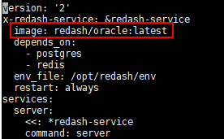
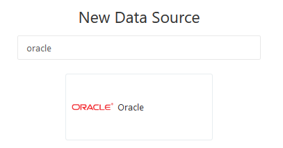

I tried the cloud hosted redash version which worked great and had every feature we need
in our company. So I started to set up the open source version of redash.
I was able to get it running on Debian 10 (Buster) and was able to login. As I tried to connect our oracle Database, I saw there is no oracle data source available. After some research I found out, that this isn’t included out of the box in the self hosted version and needs to be added manually.
I downloaded the newest version of redash and extracted zip to /opt/redash
I unzipped everything in the same folder
I made the new folder oracle/ and downloaded the newest Version of the oracle instant clienz zips to this folder (version 19.3.0.0.0, basic, sdk, sqlplus)
I started the setup script, without the setup_compose() function (we use a proxy so I had to make some changes but it worked.
next steps were the same as in the tutorial because the docker-compose.yml was not working, I used the official one from the redash github repo.
Sadly there are a lot of errors while installing the docker build but I can’t understand what to to in the next
place.
Can someone tell my, what steps to do, that I’m able to use the oracle data source on Debian 10?
I’m absolutely stuck but we would love to use redash in our company.
Thanks a lot.
Technical details:
Redash Version: 7.0.0
Browser/OS: Debian 10
How did you install Redash: Downloaded zip and started setup.sh
You don’t need to install npm if you use our docker images Part of the problem in your screenshots is that your version of NodeJS is quite old. Try Node v10 or newer.
I wouldn’t expect problems, though, because you said earlier you installed Redash and could log in. What are you trying to achieve with that docker build command?
I got it working once but then I tried to install the oracle data source and my Redash wasn’t working anymore. So I followed the tutorial and reinstalled redash with the docker build command as described in the github tutorial I linked above.
As I never used Docker before and I’m not that familiar with it.
So in this case, I can import the oracle data source without a rebuild of the container?
How exactly can I execute the pip install cx_oracle command when I’m not running it inside the Dockerfile while building it the first time?
I tried everything to get it working but the mistake I did was that I forgot to use my custom built container in the docker-compose.yml. So everytime I started docker-compose run --rm server create_db and then docker-compose up -d I used the official redash/redash container and not my custom built.
Because of that my custom Dockerfile did nothing and the official one was used.
For everyone else who struggles with the oracle installation here a quick summary of the steps I did to get it working.
I downloaded the latest zip file from the redash GitHub repository.
Unzipped it to /opt/redash/
Also I created a new Dockerfile in an other directory for example /opt/redash_oracle/ and copied the following content of the Dockerfile from the Dockerhub oracle Docker Hub
downloaded the version 11.2.0.4.0 from the oracle instantclient (sdk, sqlplus, basic) into the folder I just created /opt/redash_oracle/oracle/ and left the three files as zip there.
Now we to build our image. Run docker build -t redash/oracle (you can give this image the name you want). Also make sure that you are in the same directory that we created before: /opt/redash_oracle/
5.1 With the command docker images -a your should now see the new image with our custom name.
We can now go back to the directory we unzipped the redash files /opt/redash/. There we have to change the docker-compose.yml file to use our OWN image: redash/oracle and not the official one from redash, otherwise you will have the same issue I had and are not able to get the oracle data source.

We now should be able to start the database docker-compose run --rm server create_db and run docker-comose to start our container docker-compose up -d
Now the new data source is visible in the admin site

Remarks:
As I understand you should also be able to use the Docker image joaoleite/redash_oracle from the official Docker Hub in the docker-compose.yml. Because I had to add our Proxy, I built my own container as mentioned in the steps above.
Maybe it’s possible to use the newer instantclient from oracle but I didn’t want to mess arround with that.
Hope I could help somebody out there when trying to add the oracle data source
Download the instant clients from oracle and save them in your created folder in a new one named oracle: /opt/redash_oracle/oracle/ Attention Make sure to use the same versions and names as used in your Dockerfile. Otherwise it won’t find those files.
Make sure to be in the same folder as your Dockerfile and build your image with docker build -t redash/oracle.
I didn’t had time to test these instructions. If there are some typos or other mistakes please forgive me.
If it doesen’t work please tell me what the problem was so I can help you further.
After running “docker-compose run --rm server create_db”, I’m getting the following error. May be due to python version mismatch. But I’m not able to resolve it. Any help is appreciated.
Creating redash_server_run ... done
Traceback (most recent call last):
File "/app/manage.py", line 6, in <module>
from redash.cli import manager
File "/app/redash/__init__.py", line 13, in <module>
from . import settings
File "/app/redash/settings/__init__.py", line 7, in <module>
from .helpers import (
File "/app/redash/settings/helpers.py", line 2, in <module>
from urllib.parse import urlparse, urlunparse
ImportError: No module named parse
ERROR: 1
@k4s1m Its Ubuntu. I solved it though. I set up my redash as described here https://redash.io/help/open-source/dev-guide/docker
Somehow my docker-compose is using python2 but the above-mentioned images use python3. That’s why it was causing “urllib.parse” not found issue. So I used the latest master branch to create a new image (which supports python2 I guess), and I used that image for the oracle-specific dockerfile.
However, now I have another issue:
When creating a query using an oracle connection, I’m getting a “Schema refresh failed. Please try again later.” error.
The host here is the IPAddress of the oracle container in the docker. Also, after clicking “Test Connection”, it does show “Success” which takes around 1 minute. Is that normal?
I’m not sure whether this is because I used the latest instantclient version. For the oracle specific dockerfile, I’m currently using instantclient-basic-linux.x64-12.2.0.1.0.zip, etc. and cx_Oracle==7.3. Which version should I actually use here?
My oracle specific Dockerfile:
FROM redash/redash_master_aks:latest
USER root
# Oracle instantclient
ADD oracle/instantclient-basic-linux.x64-12.2.0.1.0.zip /tmp/instantclient-basic-linux.x64-12.2.0.1.0.zip
ADD oracle/instantclient-sdk-linux.x64-12.2.0.1.0.zip /tmp/instantclient-sdk-linux.x64-12.2.0.1.0.zip
ADD oracle/instantclient-sqlplus-linux.x64-12.2.0.1.0.zip /tmp/instantclient-sqlplus-linux.x64-12.2.0.1.0.zip
RUN apt-get update -y
RUN apt-get install -y unzip
RUN unzip /tmp/instantclient-basic-linux.x64-12.2.0.1.0.zip -d /usr/local/
RUN unzip /tmp/instantclient-sdk-linux.x64-12.2.0.1.0.zip -d /usr/local/
RUN unzip /tmp/instantclient-sqlplus-linux.x64-12.2.0.1.0.zip -d /usr/local/
RUN ln -f -s /usr/local/instantclient_12_2 /usr/local/instantclient
RUN ln -f -s /usr/local/instantclient/libclntsh.so.12.1 /usr/local/instantclient/libclntsh.so
RUN ln -f -s /usr/local/instantclient/sqlplus /usr/bin/sqlplus
RUN apt-get install libaio-dev -y
RUN apt-get clean -y
ENV ORACLE_HOME=/usr/local/instantclient
ENV LD_LIBRARY_PATH=$LD_LIBRARY_PATH:/usr/local/instantclient
RUN pip install cx_Oracle==7.3
USER redash
#Add REDASH ENV to add Oracle Query Runner
ENV REDASH_ADDITIONAL_QUERY_RUNNERS=redash.query_runner.oracle
 Part of the problem in your screenshots is that your version of NodeJS is quite old. Try Node v10 or newer.
Part of the problem in your screenshots is that your version of NodeJS is quite old. Try Node v10 or newer.{kind=link}
{kind=link}
{kind=link}
{kind=link}
{kind=link}